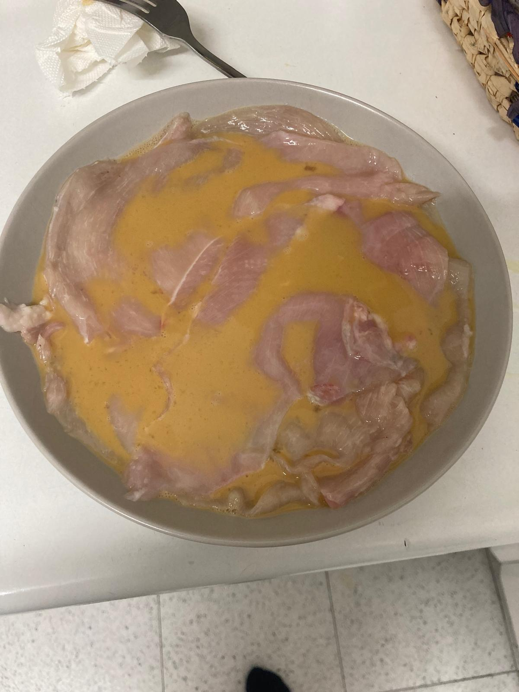
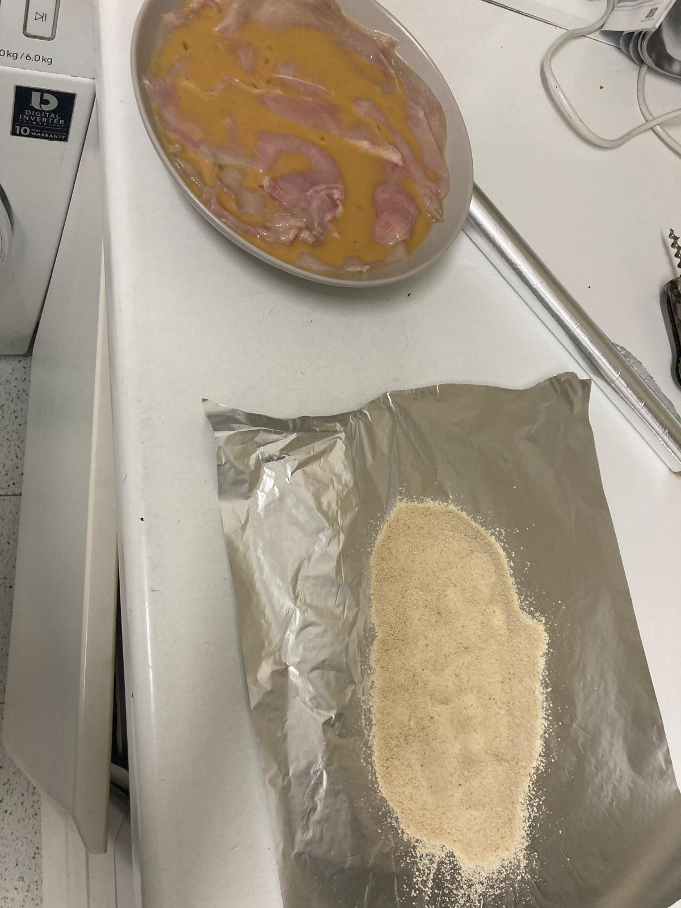
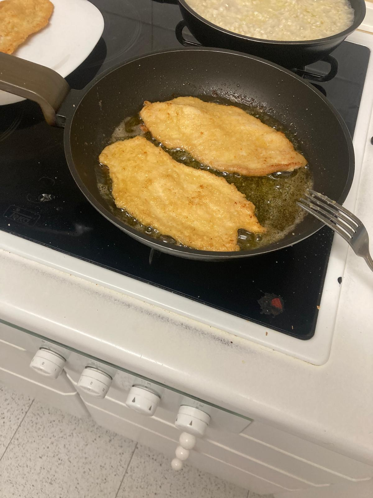

- Batimos dos huevos y los mezclamos con un chorro de vino de guisar o de leche entera. Metemos las pechugas de pollo en la mezcla y las dejamos ahí 10 o 15 minutos.
- Sacamos cada filete de la mezcla, lo salamos y lo empanamos.
- Calentamos en una sartén un poco más del fondo de aceite de oliva virgen extra. El truco es ponerlo a fuego bajo. Cocinamos los filetes por los dos lados y servimos. Se pueden comer calientes o fríos.


